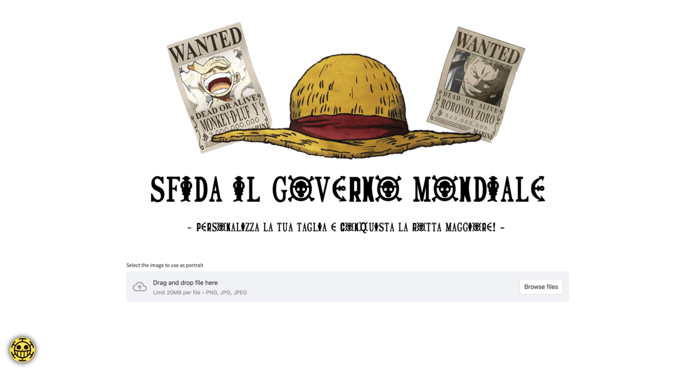

One Piece - Wanted
Web app that lets users create custom One Piece-style wanted posters with their own photo and bounty.
Python
Streamlit
Pillow
Web app that lets users create custom One Piece-style wanted posters with their own photo and bounty.
One Piece – Wanted is a web app, deployed publicly, that turns any photograph into a One Piece-style bounty poster. Upload a picture, crop it, type a pirate name and a bounty in Berry, choose how the pirate is wanted, and download the finished poster.
The poster uses the parchment background, typography and layout of the originals, with the three canonical conditions available: Dead or Alive, Only Dead and Only Alive.
What makes the result convincing is a pastel treatment applied to the photo before it is placed on the poster, so it matches the hand-drawn look of the source material.
A single slider controls a four-step effect that reduces saturation, brightens, softens contrast and adds a translucent white overlay. The uploaded photo and the generated poster are shown side by side so the effect of every setting is immediately visible.

The page is built with Streamlit and hosted on Streamlit Community Cloud. The poster is composited with Pillow, with custom styling layered on top of the framework defaults.
The full application in a single script: the pastel transformation, the poster generation and the contact panel.
Provides the page — uploader, text and numeric inputs, condition selector, intensity slider, two-column preview and download button — and hosts the app publicly on Community Cloud.
ImageEnhance drives the saturation, brightness and contrast stages of the pastel effect, and alpha_composite applies the translucent white overlay; Pillow also handles the in-memory encoding of the result.
The rendering library that composites the parchment background, portrait, name, bounty and capture condition into the finished poster.
Adds the interactive in-browser crop step, which Streamlit has no native widget for.
Injected through st.markdown(unsafe_allow_html=True) to restyle the uploader and buttons and to build the floating contact panel with base64-inlined icons.